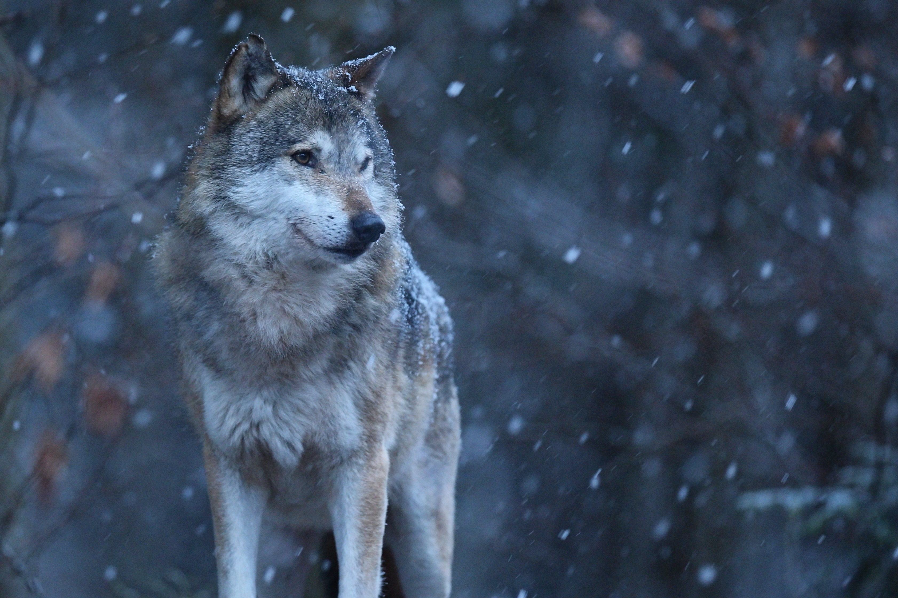

Our Mission
Our mission is to raise awareness and inspire action for the protection of endangered animals and their habitats. Through engaging content, education, and collaborative efforts, we aim to foster a global community dedicated to safeguarding the rich biodiversity of our planet for current and future generations.
Major Biomes
GRASSLAND
FOREST
AQUATIC
DESERT
TUNDRA
Featured Animal of Today

Eurasian Wolf
The Eurasian wolf (Canis lupus lupus) boasts a captivating presence across the vast expanses of Europe and Asia, embodying both mystique and adaptability. With a remarkable ability to thrive in diverse environments, these wolves range from the dense forests of Scandinavia to the frigid Russian tundra, showcasing their prowess as true ecological chameleons. Known for their complex social structures, Eurasian wolves form tight-knit packs that exhibit sophisticated communication and teamwork, a trait that greatly enhances their hunting success. Moreover, their population, estimated to be around 50,000 individuals, highlights their resilience and significance in maintaining the delicate balance of ecosystems across their range.